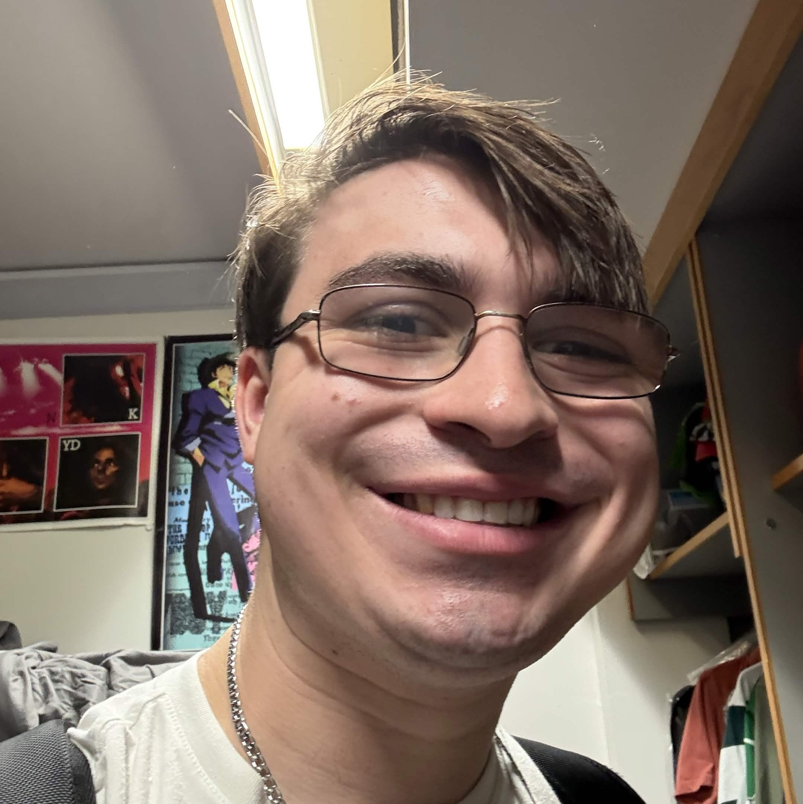
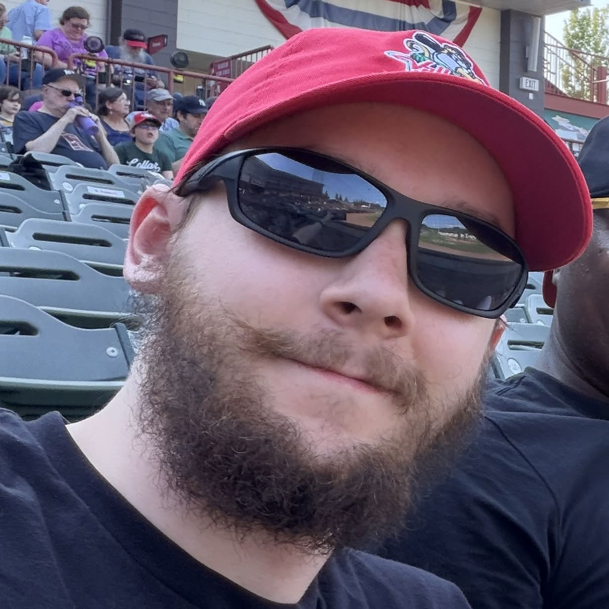
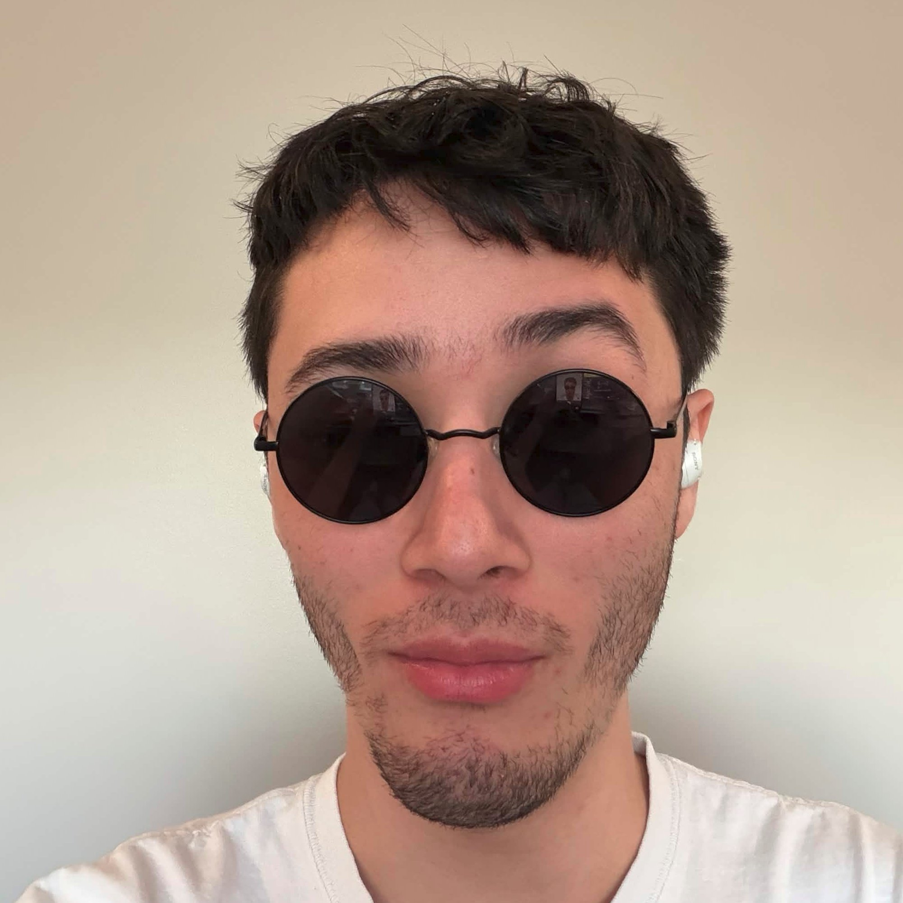

About Obsidian StarObsidian Star is an alternative rock band based in Rochester that focuses on performing original compositions. The band formed from at RIT over a shared love of bands like the Smashing Pumpkins, Nirvana, Green Day, and many more. Meet the Band Shane R. - Vocals & Guitar I’m the singer and one of the guitarists in the band. I’m also the primary songwriter. I was born and raised in the suburbs of Philadelphia. Music was always around in my house, but I didn’t start playing until 9th grade when I found my dad’s old acoustic tucked away in the basement. Since then, I've been obsessed with writing and performing. I started the band in late 2023 during my freshman year at RIT. We were heavily inspired by bands such as Smashing Pumpkins, Pink Floyd, and Deftones. That pretty much sums it up. Also, love Resident Evil. Also, go Birds, dickhead!  Bradley W. - Guitar One of the guitarists in the band, I have been a musician for about as long as I could walk. I got my first drum kit as a small child, and over the years picked up the Oboe, and finally, the Guitar. Currently hailing from New York’s Capital Region (go ValleyCats) and studying Computer Engineering at RIT, I helped form the band in my freshman year along with Shane. In my free time if I’m not playing guitar, I can probably be found playing Guitar Hero (YARG), Half-Life, Kingdom Hearts, or Arkham. I’m a big metalhead, with a sweet spot for progressive music, particularly bands like Alter Bridge, Dream Theater, Animals as Leaders, Tremonti, and many more. If you wanna chat you can find me lurking in the band discord server Nick L. - Bass I’m the bassist, from Chicago and Northwest Indiana. I started playing bass a few years ago, a little bit after I started out with guitar. With some consistent effort, I’ve kept at it and gotten better. In joining Obsidian Star around when I arrived on campus as a freshman, I got to hit the ground running and cultivate more long-term, cumulative goals for myself, and make a few friends along the way. I love most kinds of music, but typically seek out and listen to metal and obscure 2000s emo music. Despite our university being an institute of technology, it has an incredibly robust liberal arts program.  Noah S. - Drums After escaping the experimental facility where he was born, Noah Shin spent several years traversing the intricate sewer systems of Buffalo, New York before eventually finding himself at RIT, where he was mistaken for a drummer by a tour group. The rest was history. |